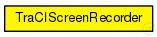

This documentation is released under the Creative Commons license
This documentation is released under the Creative Commons licenseSimple support module to take (a series of) screenshots of a simulation running in the TraCI server.
Note that the TraCI server needs to be run in GUI mode and support taking screenshots for this to work.
The screenshots can then be converted to a video using something along the lines of mencoder 'mf://results/screenshot-*.png' -mf w=800:h=600:fps=25:type=png -ovc lavc -lavcopts vcodec=mpeg4:mbd=2:trell -oac copy -o output.avi
See the Veins website for a tutorial, documentation, and publications .
Author: Christoph Sommer
See also: TraCIScenarioManager
The following diagram shows usage relationships between types. Unresolved types are missing from the diagram. Click here to see the full picture.
The following diagram shows inheritance relationships for this type. Unresolved types are missing from the diagram. Click here to see the full picture.

| Name | Type | Default value | Description |
|---|---|---|---|
| debug | bool | false |
emit debug messages? |
| dirname | string | "" |
directory name for screenshots (leave blank to use ${resultdir}) |
| filenameTemplate | string | "" |
file name for screenshots in printf syntax; the %f parameter is set to the current simulation time (leave blank to use screenshot-${runid}-@%08.2f.png) |
| viewName | string | "View #0" |
which TraCI server view to choose |
| start | double | 0s |
when to take the first screenshot |
| interval | double | .1s |
how often to take a screenshot |
| stop | double | -1s |
when to take the last screenshot (-1: never) |
| Name | Value | Description |
|---|---|---|
| display | i=block/downarrow | |
| class | Veins::TraCIScreenRecorder |
// // Simple support module to take (a series of) screenshots of a simulation running in the TraCI server. // // Note that the TraCI server needs to be run in GUI mode and support taking screenshots for this to work. // // The screenshots can then be converted to a video using something along the lines of // mencoder 'mf://results/screenshot-*.png' -mf w=800:h=600:fps=25:type=png -ovc lavc -lavcopts vcodec=mpeg4:mbd=2:trell -oac copy -o output.avi // // See the Veins website <a href="http://veins.car2x.org/"> for a tutorial, documentation, and publications </a>. // // @author Christoph Sommer // // @see TraCIScenarioManager // simple TraCIScreenRecorder { parameters: @display("i=block/downarrow"); @class(Veins::TraCIScreenRecorder); bool debug = default(false); // emit debug messages? string dirname = default(""); // directory name for screenshots (leave blank to use ${resultdir}) string filenameTemplate = default(""); // file name for screenshots in printf syntax; the %f parameter is set to the current simulation time (leave blank to use screenshot-${runid}-@%08.2f.png) string viewName = default("View #0"); // which TraCI server view to choose double start @unit("s") = default(0s); // when to take the first screenshot double interval @unit("s") = default(.1s); // how often to take a screenshot double stop @unit("s") = default(-1s); // when to take the last screenshot (-1: never) }
This documentation is released under the Creative Commons license